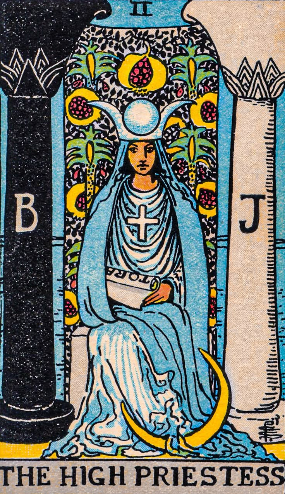

🃏 당신은 The High Priestess (여사제) 타입입니다
키워드: 직관적 · 신비로움 · 내면 탐구자
성격 한 줄 요약: "모든 답은 내 안에 있다."
🌟 카드의 의미
여사제는 단순한 사람이 아닙니다.
그녀는 세상과 단절된 듯한 고요 속에서,
진리와 비밀을 지키는 자입니다.
당신은 또한 혼자 있는 시간이 필요하고,
외부의 소음보다는 내면의 감정과 직관을 믿는 성향을 지니고 있습니다.
때로는 다른 사람들의 눈에 신비롭고 알 수 없는 존재로 비치기도 합니다.
하지만 그 고요한 표정 뒤에는 복잡하고 풍부한 감정,
그리고 누구도 쉽게 다가올 수 없는 깊이가 숨어 있지요.
✨ 이 카드가 속삭이는 강점
당신은 타인의 심리를 꿰뚫어보는 통찰력이 있습니다.
또한 다른 이들이 보지 못하는
진실의 결을 알아차리는 눈을 지니고 있군요.
사람들은 당신 곁에 있으면 왠지 모르게
편안함과 신뢰감을 느낍니다.
위기의 순간에도, 당신은 흔들리지 않는 리더십을 발휘하지요.
세상은 당신을 단순히 조용한 사람이라 말할지 모르지만,
사실 당신은 '눈에 보이지 않는 세계의 해석자'입니다.
⚠️ 이 카드의 경고
그러나 여사제의 그림자는 언제나 함께합니다.
감정을 너무 감추면, 오해를 사기 쉽습니다.
내면에 깊이 빠져드는 것은 축복이지만,
때로는 세상과의 연결을 끊어버릴 위험도 있습니다.
🧭 예언가의 조언
혼자 머릿속에서 아무리 굴려봐야 세상이 달라지진 않아요.
괜히 깊게 파고들다가 지쳐버리기 전에,
적당히 생각하고 적당히 표현하면서 지내는 게 훨씬 현명하죠.
세상은 당신이 그렇게 골똘히 끙끙대는 걸 바라지도 않아요.
가볍게 나누고 흘려보내며 살아가세요.
그게 오히려 당신을 더 자유롭게 만들어 줄 겁니다.